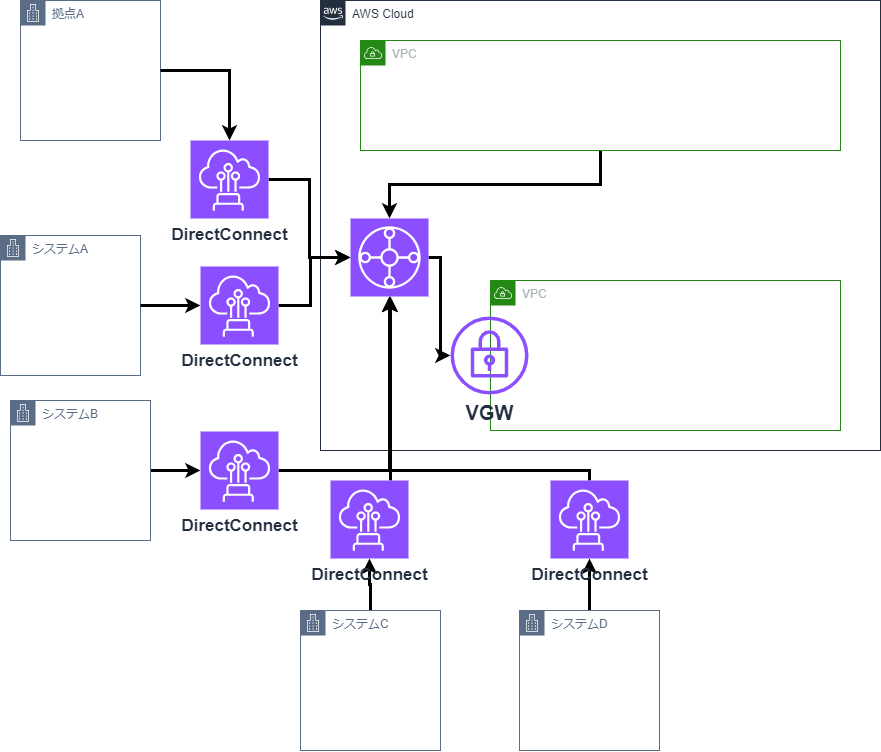

クラウドネイティブ＆マイクロサービス塾活動¶
塾の活動目的¶
1.これまで塾長・塾生が蓄積してきたSpring/AWSをベースとした技術検証・ナレッジのトランスファーを通してトップ人材(フルスタックエンジニア)を育成
2.初級〜中級技術者を対象とした育成コンテンツの整備・スキルマップの定義
3.デジタル技術リファレンスアーキテクチャの整備・公開
塾における技量レベル¶
https://debugroom.github.io/technical-academy/kickoff/202310/slides/index.html#/6-1
基盤系についてはGrade3近い知識はあるが、AP系はGrade1以下であり、Grade1すらハードルが高そうな感触である。
テーマ再検討(AWS)¶
spring学習の進捗が芳しくないため、AWSに特化したテーマの再検討を行う。
NetworkFirewall/AWS WAF使ってみる¶
利用したことがなく、興味もあるため。
検証ポイント¶
Trangitgateway使ってみる¶
移行検討¶
現状プロジェクトでTGW/DXGWを使わず、直接VGWに紐づけている。
影響無く移行する手順を検討したい。
移行前イメージ¶

移行後イメージ¶

検証ポイント¶
・移行方式は何があるか。方式別で以下はどうなるか。
・DirectConnectは流用可能か。
・ダウンタイムはどのくらいか。
・設定変更が必要な箇所はどこか。
・コストに影響あるか。
・その他懸念はあるか。
AWSサービス使ってみる¶
使ったことが無いAWSサービスは数多く存在する。
1つ1つ触ってみて簡易的なレポートを作成する。
ランニングコストを削減するための方法検討¶
AWSで少しでもコストを削減したい時の方法について調査、検証する。
検証ポイント¶
ランニングコストを監視する方式検討¶
AWSのランニングコストの利用状況を監視する方式について調査、検証する。
検証ポイント¶
AWSでセキュリティを守るためのベストプラクティス¶
AWSセキュリティのベストプラクティスについて実際に調査、検証する。
検証ポイント¶
AWS内のOSセキュリティのベストプラクティス¶
AWS内部にサーバ構築した時のセキュリティ担保方法について調査、検証する。
検証ポイント¶
NOA環境でのWorkspaces、Windows操作実現¶
NOA環境でのWorkspaces、Windows操作をするための方式について調査、検証する。